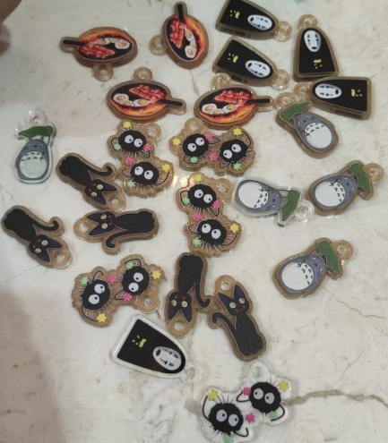
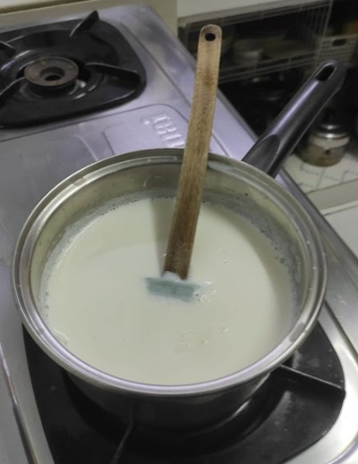
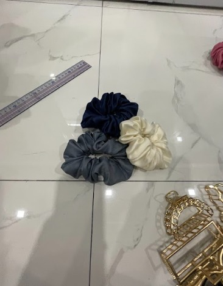
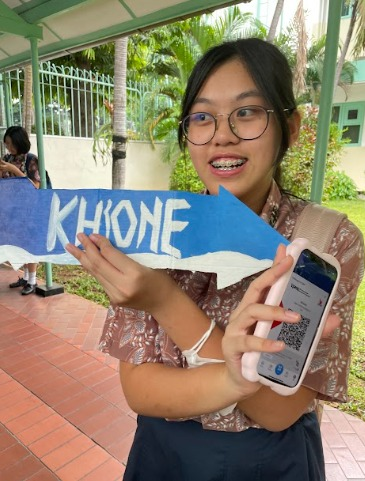
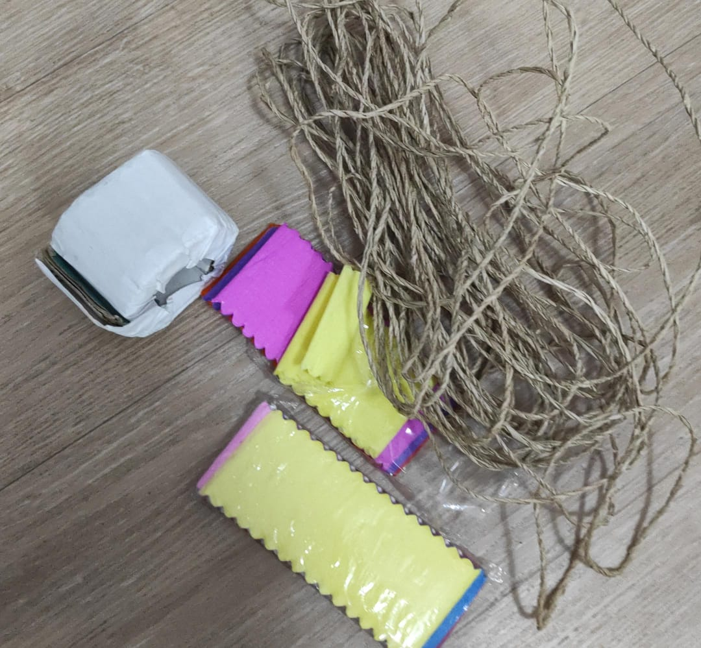
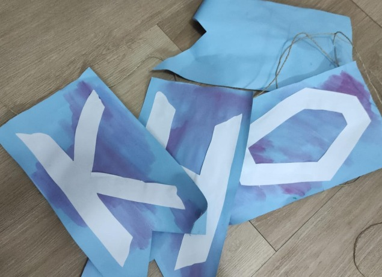
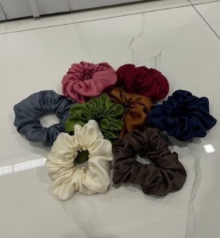
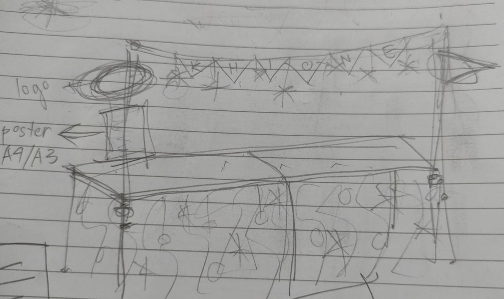

|
ㅤDalam merencanakan produk, kami bekerja sama untuk menentukan produk yang akan dijual. Kami saling berdiskusi dan berbagi ide. Dari ide-ide tersebut, kami mencatat dan memilih ide yang sekiranya paling cocok dengan kegiatan bazar ini. Kami merencanakan produk-produk sesuai dengan selera komunitas Sekolah Santa Ursula Jakarta, terutama para siswi SMP Santa Ursula Jakarta. Kami memerhatikan produk yang dipakai para siswi dalam kehidupan sehari-hari. Kami memikirkan produk yang unik dan lucu, namun juga dapat bermanfaat. Dalam merencanakan produk yang akan dijual, kami pertama-tama menentukan tema bersama teman-teman satu kelas. Setelah itu, kami baru menentukan produk yang sesuai dengan tema kelompok kami. Kami melakukan berbagai research untuk mencari berbagai macam produk yang dapat dijual. Selain produk-produk, kami juga mencari ide makanan dan minuman yang dapat dijual. |
 |
|  |
ㅤㅤDalam merencanakan produk, kami juga harus merencanakan produk untuk memenuhi tugas bioteknologi dan pengolahan. Oleh sebab itu, kami mencari berbagai resep produk yang sesuai dengan tugas bioteknologi dan pengolahan. Kami merencanakan produk bioteknologi yang cukup mudah dan menggunakan bahan yang mudah didapat. Setelah menentukan produk bioteknologi yang akan dibuat oleh kami, yaitu yogurt dan keju, kami pun membuat perencanaan dan menulis resep untuk masing-masing produk bioteknologi tersebut. Untuk produk pengolahan, kami harus mencari produk hasil olah peternakan atau perikanan. dalam pengolahan, kami pun harus membuat perencanaan resep makanan yang akan dibuat. Setelah menggabungkan ide dan hasil pencarian kami, kami menentukan untuk membuat Snow Chicken atau ayam goreng yang ditaburi keju. |
|
ㅤㅤKami juga melihat faktor-faktor yang dapat membuat pembeli tertarik untuk membeli produk kami. Seperti pembuatan ayam goreng, kami berencana untuk membuat ayam goreng filet dengan ukuran yang kecil agar mudah dikonsumsi. Untuk produk yang akan dijual, kami memilih produk yang menarik dan memiliki nilai fungsi. Kami telah memerhatikan bahwa banyak siswi SMP Santa Ursula Jakarta yang menggunakan scrunchie atau sejenis karet rambut kain dan jedai atau jepit rambut. Sehingga, kami melakukan research untuk menemukan scrunchie dan jedai yang cocok untuk dijual. Awalnya, kami menggabungkan berbagai link untuk membeli scrunchie dan jedai yang akan dijual ulang. Setelah berdiskusi, kami akhirnya menentukan beberapa jenis jedai dan warna scrunchie yang akan dijual. |
 |

|
ㅤㅤDalam perencanaan proses promosi, kami menggunakan iklan poster dan juga iklan video. kami membuat poster dengan menggunakan media perangkat lunak yaitu Canva yang memudahkan kami untuk saling berkolaborasi. Canva memungkinkan kami untuk menuangkan ide masing-masing dan menggabungkan ide kami dalam mendesain poster, katalog, iklan, dan post di aplikasi sosial media, Instagram. Penulis pun tentu saja melakukan pembagian tugas agar pekerjaan yang perlu dilakukan cepat selesai. Penulis dengan bertanggung jawab mengerjakan bagian tugas masing-masing dan saling membantu. Sedangkan dalam pengerjaan iklan video, kami mencari beberapa tren menarik dari aplikasi sosial media Tiktok dan membuat tren tersebut untuk menarik pembeli. ㅤㅤDalam pembuatan poster, kami memasukkan semua produk yang akan dijual, nama toko, slogan, dan juga nomor kontak. Salah satu rencana kami agar produk terlihat menarik adalah dengan cara mengambil foto produk tersebut dengan pencahayaan dan sudut yang pas. kami mengambil gambar asli produk dalam keadaan yang jelas agar produk dapat terlihat jelas. kami berusaha untuk membuat poster tersebut sedemikian rupa sehingga menarik bagi target pembeli. kami telah membuat banyak rencana untuk konsep poster, sampai akhirnya konsep yang terpilih merupakan gabungan dari ide kami. |
||
|
ㅤㅤSelain mengunggah iklan ke sosial media, kami juga membagikan informasi mengenai toko Khione ke teman-teman masing-masing. Hal ini dilakukan agar semakin banyak orang yang mengetahui informasi mengenai produk jualan kami, baik internal maupun eksternal. Jika semakin banyak orang yang mengetahui produk jualan kami, semakin banyak orang juga yang akan tertarik dan membeli produk jualan kami. Peneliti menyebarkan iklan-iklan yang sudah di buat di platform sosial media milik masing masing seperti Instagram dan WhatsApp. Dengan strategi-strategi promosi tersebut, toko Khione memperoleh banyak pelanggan yang tertarik dengan produk-produk kami. Tidak hanya secara internal, bahkan produk kami terjual banyak secara eksternal. Berkat kerabat para kami yang mendapat informasi toko Khione, penjualan toko Khione pun meningkat. |
 | ||
|  |
ㅤㅤDalam perencanaan booth, kami menghias booth sesuai dengan tema kami yaitu film Frozen. kami menghias booth dengan menggunakan barang-barang yang sudah dimiliki kami. Penulis berusaha untuk mengurangi pengeluaran yang besar untuk hiasan sebisa mungkin. Sebagian besar hiasan merupakan hasil karya buatan kami sendiri. Sebelum membuat karya untuk hiasan booth, kami telah membuat perencanaan booth singkat dengan cara membuat sketsa. Dari sketsa yang dipilih, kami langsung menyiapkan barang-barang yang dibutuhkan agar sesuai dengan sketsa yang telah dibuat. Barang-barang untuk dekorasi sudah disiapkan sebelumnya, terutama untuk yang perlu digunting atau dihias dan membutuhkan waktu. Untuk meja sudah disiapkan dari pihak sekolah. Kain hitam digunakan untuk menjadi taplak meja agar memberikan kesan mewah dan elegan. |
||
|
ㅤㅤSelanjutnya, bagian depan meja diberi ornamen fairy light dan gantungan-gantungan kertas bermotif snowflake untuk menarik perhatian para pelanggan. Peneliti juga menggunakan 2 pipa paralon bekas di 2 ujung meja sebagai “tiang”. Fungsinya adalah untuk memasangkan tali yang sudah ditempeli kertas biru besar yang bertuliskan “Khione” agar lebih menarik perhatian para pembeli dan lebih memperlihatkan adanya booth tersebut. Teks besar bertulisan “Khione” tersebut dibuat oleh kami sendiri dengan kertas yang digunting, dan kami juga memberikan sedikit warna pada kertas tersebut dengan cat air agar tidak terlalu polos. Tulisan “Khione” itu sendiri kami tulis tangan menggunakan spidol. Di 2 pipa paralon tersebut kami juga melilitkan hiasan snowflake kecil agar terlihat lebih menarik dan tidak membosankan. |
 | ||
|  |
ㅤㅤSelain itu, di samping meja telah dipajang pohon natal kecil yang sudah di dekorasi dengan ornamen-ornamen natal berwarna biru dan perak, serta lampu pohon natal. Supaya pohon natal tersebut terlihat lebih menarik, ditambahkan juga sebuah keranjang yang berisikan scrunchie yang akan dijual dan sebuah cool box agar para pembeli dapat melihat adanya minuman dingin yang tersedia. Dengan dipajangnya pohon natal kecil ini, pengunjung akan lebih menyadari keberadaan pohon tersebut, lalu melihat keberadaan beberapa produk di dekat pohon natal tersebut. Dengan demikian, pengunjung jadi tertarik untuk membeli produk yang ada di dekat pohon natal, atau melihat produk jualan toko Khione lebih lanjut. |
||
|
ㅤㅤPenulis juga menambahkan dakron yang mereplikasikan salju agar terlihat lebih menarik, dan juga menggunakan display atau rak gantung yang bisa berputar untuk memajangkan gantungan kunci, salah satu produk toko Khione. Durasi dalam pengerjaan booth ini dilakukan selama kurang lebih 2 jam. Penulis mulai menghias booth sejak H-1 bazar. Sekitar seminggu sebelum hari tersebut, kami juga sudah menyiapkan dekorasi kertas yang akan digunakan. Pengerjaan yang dilakukan juga cukup efektif karena para kami sudah membagi tugas kepada tiap-tiap anggota kelompok agar semuanya dapat berpartisipasi dan memberikan pendapat dan idenya masing-masing. Pada akhirnya, booth Khione siap untuk digunakan esok harinya. Meski beberapa dekorasi sempat lepas, kami dengan cepat berusaha membetulkan dan mencari solusi agar hiasan tidak lepas lagi selama bazar dimulai. |
 | ||
ㅤㅤKelompok pelaksanaan proyek bazar ini dibentuk oleh guru-guru pada 2023. Anggota kelompok penulis terdiri dari 4 orang yaitu Tere, Gaby, Vianna dan Kinga. Setelah kelompok tersebut dibentuk, penulis langsung berkumpul dan mendiskusikan hal-hal mengenai bazar. Awalnya penulis belum mengenal satu sama lain dengan baik, sehingga pada awalnya penulis masih malu-malu memberikan pendapat masing-masing. Tetapi pada akhirnya penulis bisa lebih dekat dan nyaman untuk memberikan pendapat kita masing-masing.

ㅤㅤPada awalnya penulis dijelaskan dan digambarkan mengenai tugas-tugas penulis kedepannya untuk setiap mata pelajaran. Setelah beberapa pertemuan, kelas penulis menyetujui untuk memakai tema besar yaitu “Disney”. Setelah berdiskusi, penulis memilih tema “Frozen” untuk toko. Setelah tema itu ditentukan, penulis membahas mengenai logo dan nama toko yang cocok untuk toko penulis. Penulis terus mencari nama-nama yang unik sebelum akhirnya penulis memilih nama “Khione”. Khione sendiri kita ambil dari nama salah satu dewa, “Khione” yang merupakan dewa salju. Oleh karena itu, di logo penulis ada gambar seperti tongkat sihir yang menggantikan atau melambangkan huruf “I” di kata Khione. Setelah semua itu selesai penulis lanjut membahas mengenai apa yang ingin dijual untuk bazar. Penulis menyampaikan banyak sekali ide-ide dan pada akhirnya penulis memilih sebanyak 9 produk untuk dijual. Setelah itu penulis lanjut untuk membuat poster dan iklan-iklan yang menarik untuk mempromosikan produk-produk penulis. Tetapi sebelum itu penulis juga sudah membeli barang-barang untuk difoto dan dimasukkan ke dalam poster tersebut agar barang yang dijual dan barang yang diterima oleh pembeli sama dan sesuai. Setelah poster selesai, penulis juga membuat katalog supaya pelanggan dapat melihat produk-produk penulis. Poster tersebut juga akan penulis masukkan ke form pemesanan PO. Setelah semua itu selesai, penulis mulai membuat caption untuk post ke media-media sosial penulis. Setelah itu penulis menunggu dan mencatat semua pesanan yang ada. Setelah form pre-order ditutup dan semua pesanan sudah masuk, penulis mulai memesan barang-barang yang dipesan oleh pelanggan PO.
ㅤㅤPenulis melaksanakan bazar offline tepatnya pada tanggal 6 Desember 2023 di aula SMP Santa Ursula Jakarta. Tetapi sebelum itu penulis sudah menyiapkan stok barang yang akan dijual saat bazar. Penulis membagi tugas ke setiap anggota untuk hari pelaksanaan. Gaby bertugas sebagai kasir dan mencatat pembelian serta stok, sedangkan anggota lainnya melayani pelanggan-pelanggan yang datang. Setiap anggota juga membawa barang-barang untuk menghias booth penulis. Setelah semua itu selesai, penulis melanjutkan proses pemberian pesanan-pesanan PO dan memberikan pesanan itu ke orang-orang yang membeli. Dengan begitu kegiatan utama penulis telah selesai.
Saya dan kelompok saya semua dapat bekerja sama dengan sangat baik dan juga berusaha untuk selalu menerapkan nilai nilai persatuan didalamnya. Mulai dari kita awal bekerja sama sampai saat ini, walaupun awal-awal kita tidak terlalu kenal dan dekat satu dengan yang lain, kami terus berusaha untuk mengenal dan mendekatkan diri satu dengan yang lain sampai akhirnya kita bisa dekat satu dengan yang lain dan bekerjasama dengan baik. Dari awal dibentuknya kelompok ini dan memulai perencanaan perencanaan untuk bazar dan tugas tugas lainnya, saya dan kelompok saya bisa membagi tugas dan mengerjakan tugasnya masing masing dengan baik. Saya dan kelompok saya tidak hanya membagi tugas dan mengerjakannya tetapi kita juga terus memberikan semacam update progress kita masing masing agar anggota kelompok lain bisa memberikan ide dan juga tanggapan. Ketika kami memiliki kesulitan, kami selalu berusaha untuk berkomunikasi satu dengan yang lainnya agar bisa menemukan dan mendiskusikan solusi yang tepat. Persatuan tentunya sangat penting dalam kerjasama. Persatuan pastinya sangat amat membantu kelancaran dalam kerjasama. Hal ini cukup penulis rasakan di dalam kelompok. Persatuan di kelompok penulis sangat berpengaruh terutama dalam hal perselisihan dan miskomunikasi. Kelompok kami sangat minim adanya perselisihan maupun miskomunikasi, sehingga kerjasama kami bisa berjalan dengan lancar. Ketika terjadi miskomunikasi-pun kami berusaha untuk meluruskan dan menjelaskannya. Setiap anggota kelompok tentunya mempunyai perannya masing masing, begitu juga dengan saya. Peran saya dalam kelompok ini adalah memberikan ide ide untuk desain post Instagram, mendesain logo toko Khione, membuat cookie kit dan juga crystal jelly, dan juga membantu mengedit video video promosi maupun tugas. Walau begitu saya tentunya tetap bertanya dan meminta kepada anggota kelompok saya untuk memberikan tanggapan, dan ketika saya melakukan kesalahan, saya akan berusaha mencari solusi untuk menyelesaikan masalah tersebut.
ㅤㅤMulai dari perencanaan, pelaksanaan, sampai pembuatan laporan, kelompok saya dapat
bekerja sama dengan baik dan menjunjung nilai persatuan. Dari perencanaan, kelompok saya dapat membagi
tugas dengan baik dan kami mengerjakan bagian masing-masing dengan sungguh-sungguh dan bertanggung
jawab. Kami juga tetap memantau pembagian pekerjaan satu sama lain agar tetap bisa saling membantu atau
menambahkan. Meskipun kami mengerjakan bagian kami masing-masing, secara keseluruhan, semua bagian kami
dikerjakan bersama sambil menyatukan pendapat dan ide-ide kami. Persatuan tentu saja sangat penting.
Persatuan mendukung komunikasi dan kerja sama yang baik. Dengan komunikasi yang baik, diskusi pun dapat
berjalan dengan baik dan mengurangi terjadinya miskomunikasi. Setelah saya perhatikan juga selama
pengerjaan IL ini dari awal sampai akhir, hampir tidak ada miskomunikasi sama sekali.
ㅤㅤBeberapa peran saya dalam kelompok adalah memberi ide produk dan desain katalog. mengatur desain untuk
post di Instagram. Menghitung dan menentukan harga produk, membuat tabel dan sistem perhitungan di
google sheets, menjadi kasir meski akhirnya kami semua menjadi kasir saat hari-H bazar. Saya mengambil
bagian dalam pembuatan yogurt, desain tote bag “Sancta Ursula”, dan penyusunan manik-manik untuk
gantungan kunci. Saya juga membuat website untuk laporan akhir ini. Namun berkat adanya persatuan dan
kerja sama yang sangat baik di kelompok saya, saya merasa sangat terbantu. Saya bisa dengan mudah diberi
solusi oleh anggota yang lain agar bisa mengerjakan tugas-tugas IL dengan maksimal. Saya mengerjakan
tugas-tugas yang menjadi tanggung jawab saya dengan sungguh-sungguh agar memberi hasil yang baik bagi
kelompok saya. Semua teman dalam kelompok saya juga telah bertanggung jawab dalam mengerjakan tugas
mereka. Karena kami semua mengambil tugas dengan serius dan sungguh-sungguh, tugas dapat berjalan dengan
baik dan memberi hasil yang lumayan memuaskan.
ㅤㅤMeski dari awal saya tidak terlalu kenal atau bahkan baru kenal dengan beberapa anggota kelompok saya,
kami bisa menjaga komunikasi yang baik dan juga membangun sebuah ikatan pertemanan. Cara kami membangun
kerja sama dengan baik adalah dengan cara berkomunikasi dengan jelas dan membagi tugas dengan adil. Kami
juga berusaha memahami tugas-tugas yang kami miliki. Misalnya saat tugas kelompok yang harus kami
kerjakan di rumah satu sama lain atau melalui google meet. Kami mengatur jadwal pengerjaan tugas
berdasarkan jadwal sehari-hari kami juga. Karena tentu saja kami memiliki les dan kegiatan lainnya.
Persatuan dan pemahaman akan satu sama lain telah membawa banyak dampak positif. Saya merasa kelompok IL
saya merupakan salah satu kerja kelompok paling efektif dan semua anggota dapat berkontribusi dengan
sangat baik. Tidak hanya mempermudah pekerjaan, namun juga membuat suasana lebih menyenangkan. Saya jadi
tidak terlalu “terbebani” karena tugas melainkan jadi lebih bersemangat dengan dukungan teman-teman
sekelompok saya.
ㅤㅤPada proses pelaksanaan IL, saya berada di kelompok 6 bersama dengan Kinga, Gaby,
dan Tere. Pada awalnya saya tidak kenal dan tidak terlalu dekat dengan mereka. Tetapi seiringnya waktu
berjalan kami menjadi lebih akrab dan dapat menjalin kerja sama yang baik. Mulai dari perencanaan
dasar dari toko penulis seperti perencanaan nama, logo, produk, slogan, dan lainnya, kami sudah dapat
bekerja sama dengan baik. Tetapi, waktu awal kegiatan IL ini, sekolah juga sedang melakukan pentas seni
165 tahun sekolah, dan kebetulan seluruh anggota kelompok saya terlibat aktif dalam pentas seni
tersebut. Maka dari itu, terpaksa penulis agak terlambat dalam proses daripada kelompok lain. Tetapi,
pada akhirnya kami dapat mengejar ketertinggalan dari kelompok kami dan akhirnya dapat mengikuti
alur atau jadwal dari semua kelompok lain.
ㅤㅤMeskipun kami sibuk dengan kegiatan penulis, penulis tetap dapat saling menghargai dan tetap dapat
menjalin persatuan yang baik. Penulis semua mau mendengarkan pendapat dari tiap-tiap anggotanya dan
saling membantu dalam pengerjaan tugas. Contohnya ketika ada yang masih tidak paham dengan cara
menghitung keuntungan produk, penulis saling membantu agar tugas dapat terselesaikan dengan baik. Peran
saya dalam kelompok ini adalah menjadi bendahara, saya juga berpartisipasi aktif dalam perencanaan
kegiatan penulis mulai dari perencanaan produk sampai ke dekor booth seperti mendekorasi dan membawa pohon natal. Saya juga membantu mengusulkan ide
untuk post di akun sosial media kami. Pada saat bazar saya juga berpartisipasi aktif dalam pembuatan
produk seperti snow chicken dan memarinasinya dari rumah maupun keychain yang penulis jual. Setelah bazar selesai saya juga aktif
dalam perhitungan hasil uang penulis, karena saya memegang uang hasil transferan dan uang hasil QRIS.
Tapi sayangnya saya kurang aktif dalam pemberian produk PO, dikarenakan waktu pembagian produk PO saya
sedang aktif dalam kegiatan OSIS, sehingga saya hanya bisa memberikan produk PO ke hanya 4 orang saya. Setelah itu saya tetap membantu dalam pengerjaan isi website maupun membantu websitenya dan membantu membuat presentasi kelompok.
Tentu saja tugas saya di kelompok ini juga tidak sedikit, tetapi atas bantuan teman-teman saya,
pekerjaan menjadi lebih mudah dan cepat terselesaikan. Sehingga menurut saya persatuan yang ada di
kelompok penulis sangat bagus dan penting dalam keberlangsungan proyek IL penulis. ``
ㅤㅤSelama pengerjaan proyek IL ini, kelompok saya berdinamika dan memiliki rasa
persatuan serta kerja sama yang baik. Meskipun pada awalnya kami sedikit asing, tetapi proyek ini
menumbuhkan rasa persatuan yang kuat di dalam diri kami masing-masing. Dari perencanaan produk sampai
laporan pelaksanaan akhir, kami selalu membantu sesama supaya proyek ini dapat selesai dengan hasil
yang memuaskan. Kami juga tentunya mengalami beberapa kendala. Kami semua terlibat dalam Pentas
Seni 165 tahun, maka ada beberapa saat dimana tidak semua anggota dapat melakukan bagian mereka pada
tugas-tugas tertentu. Namun anggota yang ada selalu bekerja keras untuk memastikan bahwa tidak ada yang
kurang dari tugas-tugas proyek ini.
ㅤㅤMenurut saya, saya memiliki peran yang sangat berkontribusi kepada proyek ini. Saya aktif memberikan
pendapat dan menunjukkan masalah-masalah yang mungkin dapat terjadi di masa depan supaya kelompok saya
dapat menyelesaikan masalah-masalah tersebut. Saya juga membantu membuat desain-desain produk kelompok,
khususnya gantungan kunci, dan saya juga aktif dalam mempromosikan booth penulis di sosial media supaya
dapat membangun antisipasi pelanggan. Saya merasa bahwa proyek ini sangat sulit, namun dengan dukungan
dan bantuan anggota, saya merasa bahwa proyek penjualan bazar terselesaikan dengan mudah dan dengan
hasil yang sangat memuaskan. Melalui proyek ini saya menyadari pentingnya persatuan dan kerja sama dalam
kelompok, karena jika kelompok saya ini tidak memiliki dinamika yang baik maka akan timbul banyak
masalah selama pengerjaan proyek ini. Namun saya merasa bahwa kelompok IL saya ini memiliki rasa
persatuan dan kerja sama yang tinggi.
Proyek IL kali ini dapat kami katakan sukses dalam segi keberhasilan proyek dan kerjasama tim. Hal ini didukung dengan keberhasilan kami untuk saling bekerja sama selama proses proyek ini. Contohnya ketika ada salah satu anggota yang kesulitan dalam pengerjaan tugasnya kami saling membantu agar tugas itu dapat dikerjakan dengan baik dan dengan hasil yang maksimal. Selain itu kami semua juga aktif berpartisipasi pada saat diskusi, contohnya ketika penentuan produk. Kami saling memberikan masukan agar produk yang diusulkan dapat disempurnakan sebaik mungkin dengan menggunakan pendapat kami masing-masing. Proyek ini juga mengajarkan kami betapa pentingnya sebuah kerja sama dalam tim. Kerja sama yang sukses dapat dihasilkan dari sikap setiap anggota yang mau bertanggung jawab dan saling menghargai. Pada saat proyek IL berlangsung, kami sedang sibuk dengan kegiatan lain seperti acara pentas seni sekolah, kegiatan OSIS, kegiatan ekstrakurikuler, pelajaran tambahan, dan masih banyak lagi. Tetapi, kami semua tetap saling menghargai dan saling membantu agar tugas yang kami kerjakan dapat terselesaikan dengan baik. Persatuan inilah yang membuat kelompok kami dapat berhasil di proyek IL ini.